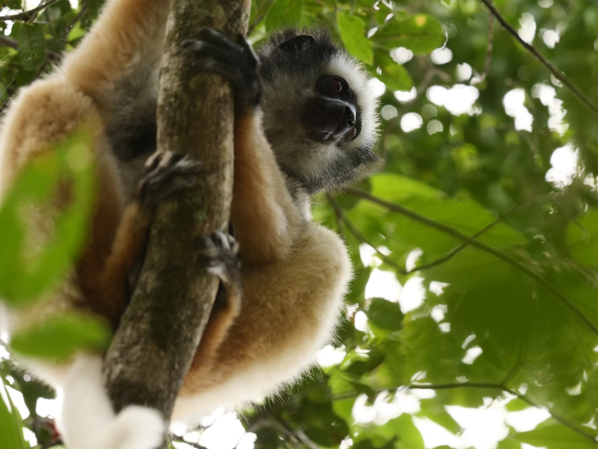
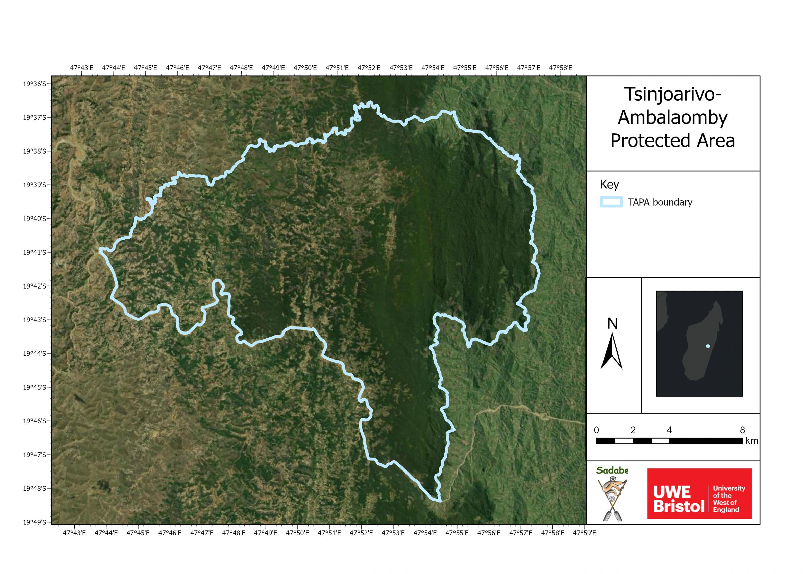
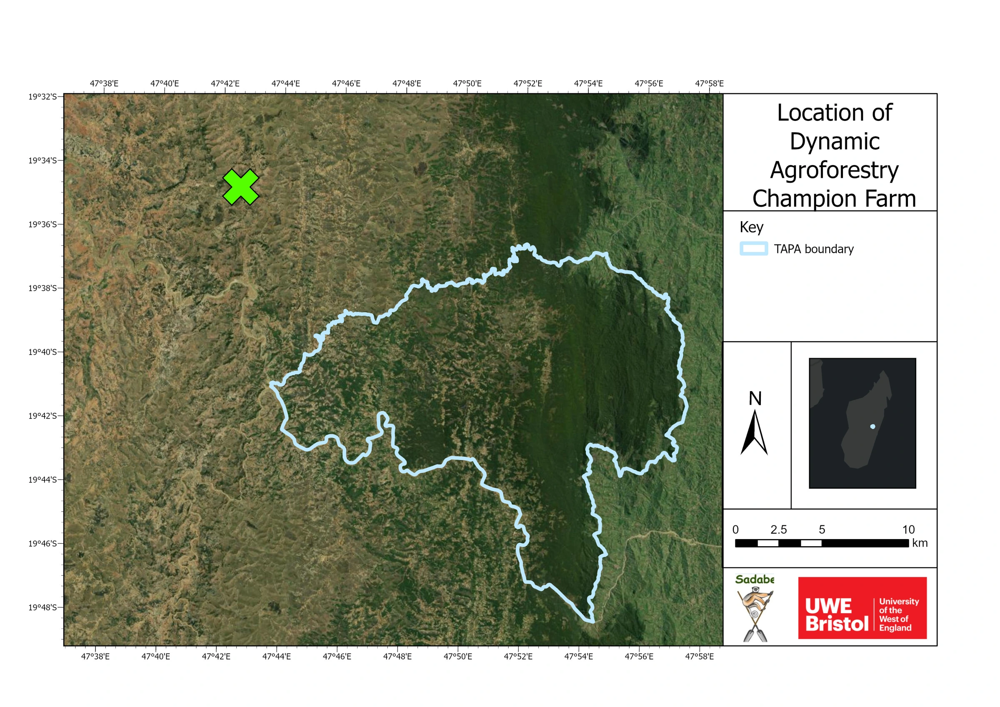
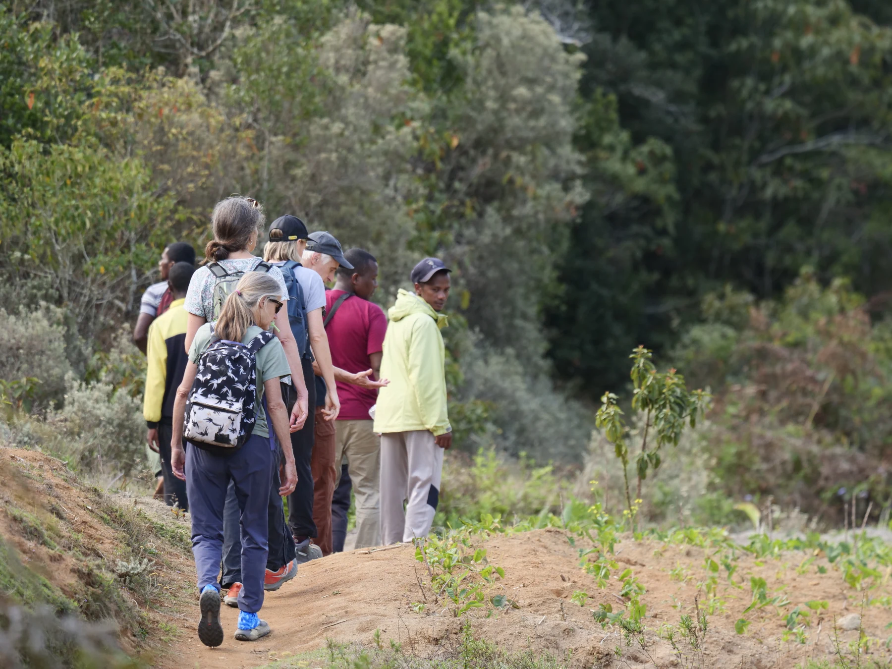
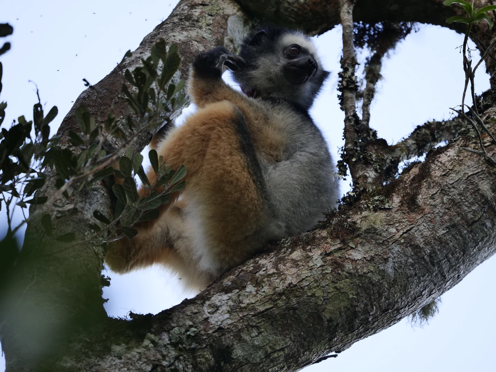
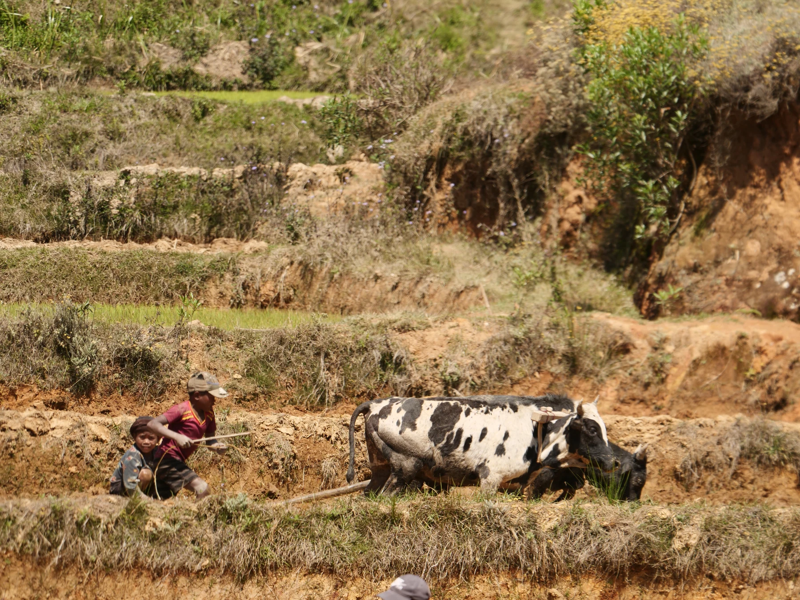
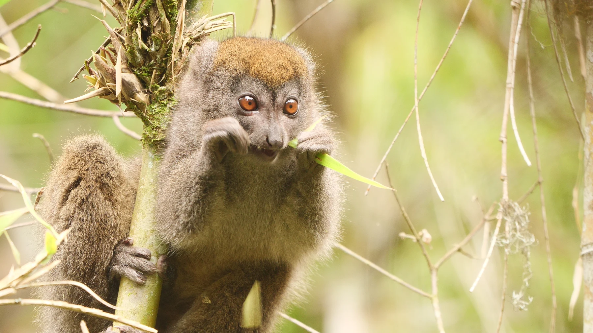
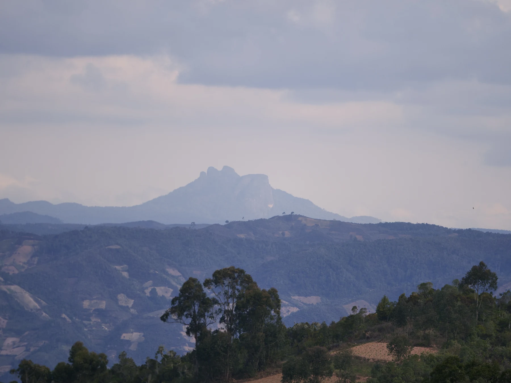

Forests.
Livelihoods.
A shared future.
Support the people protecting and restoring one of Madagascar’s remarkable highland forest landscapes.

Diademed sifaka · Pete Maxfield / UWE BristolA forest at
the edge of
the highlands.
Tsinjoarivo–Ambalaomby links a larger eastern forest block with a western mosaic of fragments, farms and communities.
A rare highland rainforest within Madagascar’s fragmented eastern rainforest chain.


Island outline: Natural Earth. Landscape maps: SADABE / UWE Bristol. The line shows the outer protected-area boundary.
A forest’s future
is also a
family’s future.
Conservation has to work for people living alongside the forest. Productive farms, healthy soils and reliable support make stewardship a practical choice.
of surveyed households said their production was insufficient for the year.
of food needs covered by households’ own harvest, on average.
Independent household baseline, April–May 2026; 277 households. These are starting conditions, not measured project effects.

September 2026 field visit · Pete Maxfield / UWE Bristol
Protect. Grow. Restore.

Forest wildlife · Pete Maxfield / UWE Bristol
Support the people
who protect it.
Community patrols and local governance are central to forest protection. Continuity of support helps communities undertake and document the work.
- Support anti-deforestation patrols
- Strengthen local organisation and accountability
- Connect field records with monitoring
The intended benefit is reduced forest loss. A quantified avoided-carbon claim would require further evidence and an appropriate methodology.

Farming landscape from the trip; not a mapped pilot parcel · Pete Maxfield / UWE Bristol
Better soils.
More tree cover.
Dynamic agroforestry combines trees and crops. Farmer support, demonstration sites and peer learning help develop practices suited to this landscape.
- Improve soil retention and land management
- Develop tree cover through agroforestry
- Explore habitat value for forest species
Restore places
with a clear plan.
The consortium is considering targeted restoration opportunities, including mining-damaged land. Each needs an agreed site, community plan, budget and maintenance arrangements.
- Confirm rights, location and participating groups
- Combine appropriate restoration and farming work
- Define what will be delivered and measured
The mining-site opportunity is under discussion. It is distinct from the champion farm shown on the supplied map.
Start with a place.
Show what
can change.
A champion farm is a concrete example of the work. UWE identifies soil retention, tree cover and habitat availability as priorities for demonstrating its benefits.
retention
Understand how land-management practices help keep soil in place.
cover
Document the development of trees within the farming system.
species
Assess habitat availability, including for mouse lemurs.
These are the outcomes to substantiate. The image illustrates the wider landscape’s wildlife; it is not evidence of mouse lemurs at this farm.

Bamboo lemur photographed on the trip · Pete Maxfield / UWE Bristol
Observe carefully.
Learn together.
Build confidence.
An independent household baseline and field research provide a foundation. Environmental monitoring is developing alongside the work.
Monitoring tools help us ask better questions. Results will need analysis before they support quantified impact or credit claims.
Drone mapping
Mapping work already undertaken to understand forest structure and the landscape.
Acoustic monitoring
Monitors are beginning to receive data. Ecological interpretation is developing.
Lemur tracking
Two lemur families are being monitored using radio collars.
LiDAR
Planned use over the next year will add detail to landscape and forest measurements.
Monitoring status supplied by the project team, October 2026. Icons are illustrative; they do not depict measured results.
Local leadership.
Lasting relationships.
A five-year Darwin Initiative programme supports the next stage: locally led stewardship connecting livelihoods, conservation and sustainable finance.
Darwin Initiative 32-013 · October 2025–September 2030 · £792,618 grant. The teaching record predates this grant.
make a forest.”
Hazo tokana tsy mba ala · Malagasy proverb used by SADABE
VOIs, savings groups and farmers shape and undertake local stewardship.
Local conservation knowledge, field support and community relationships.
Programme leadership and coordination of the Darwin consortium.
Research, teaching partnerships and environmental monitoring.
Joint field teaching and research collaboration.
Exploring finance pathways, agreements and credible stewardship evidence.
Green Reward is the community incentive approach being developed within the wider programme. The future financing mechanism remains open.
Fund the work.
Build the evidence.
Two starting points for a conversation about support. Agree the activities, places, duration and reporting with the consortium.
Support living farms
and restoration activity.
An indicative annual requirement associated with the programme’s ambition for 800 hectares of action. Detailed allocation and delivery scope are to be agreed.
Programme scale, not the size of the champion farm. An indicative estimate, not a costed project offer.
Support anti-deforestation
patrols.
An indicative annual contribution towards protection work. Confirm patrol coverage, delivery arrangements and existing funding when defining support.
Presented separately. The two amounts are not an agreed combined package.
Ballpark requirements supplied by Mark Steer, October 2026. Support may take the form of programme funding, a research partnership or another agreed arrangement. No credit volume, carbon tonnage or financial return is offered here.
A shared future
starts with
practical support.
Help the consortium define and fund a next phase of forest protection, farming and restoration—with clear responsibilities and useful evidence.
Discuss support ↗Mark SteerUWE Bristol
Mark.Steer@uwe.ac.uk
Rebecca HarmanRegen Network
rebecca@regen.network
Darwin Initiative 32-013, supported by the UK Government. A collaboration led by Money for Madagascar with SADABE, UWE Bristol, the University of Antananarivo, Regen Network and local communities.

Madagascar field photography · Pete Maxfield / UWE Bristol